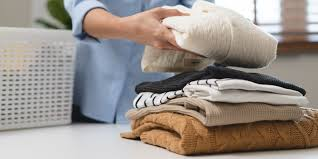

Sai Dikkatwar

Clothes are more than just fabric; they are a silent language
(click to read on Books)
a canvas for self-expression,
and a reflection of the wearer's identity, beliefs, and social standing. From the intricately
woven kente cloth of Ghana, symbolizing ancestry and status, to the simple, functional garments
of nomadic tribes, clothing tells stories. It reflects the cultural values of a society, the
changing tides of fashion, and the individual's desire to conform or rebel. Whether it's the
power suit demanding respect in the boardroom, the traditional wedding attire carrying the
weight of
traditions or the ripped jeans and
band t-shirts expressing youthful rebellion, clothes are a powerful tool of communication, shaping
perceptions and influencing social interactions in profound and often unexpected ways.
Toiletries, those seemingly mundane everyday essentials, are a testament to human ingenuity and
a reflection of our evolving relationship with hygiene and self-care. From the humble bar of soap,
crafted from natural oils and plant extracts, to the sleek, high-tech electric toothbrush with its
array of sensors and personalized settings, toiletries represent a journey through time and technology.
They are a microcosm of our desires for cleanliness, comfort, and aesthetic appeal, a blend of ancient
traditions and cutting-edge science. Whether it's the fragrant aroma of a bath bomb, the invigorating
tingle of a face wash, or the soothing balm of a moisturizer, toiletries play a vital role in our daily
routines, contributing to our physical and emotional well-being and shaping our perceptions of ourselves
and the world around us.

Books are more than just stacks of paper; they are portals to other worlds, time machines that transport
us to distant lands and bygone eras. Within their covers lie hidden universes, waiting to be discovered
by the curious minds that dare to delve into their pages. From the epic sagas of Tolkien to the intimate
reflections of Woolf, books offer a kaleidoscope of human experience, allowing us to empathize with characters,
grapple with complex ideas, and expand our understanding of the world and ourselves. They are a source of
comfort and solace, a refuge from the chaos of everyday life, and a constant companion on life's journey,
offering wisdom, inspiration, and a lifetime of intellectual and emotional growth.